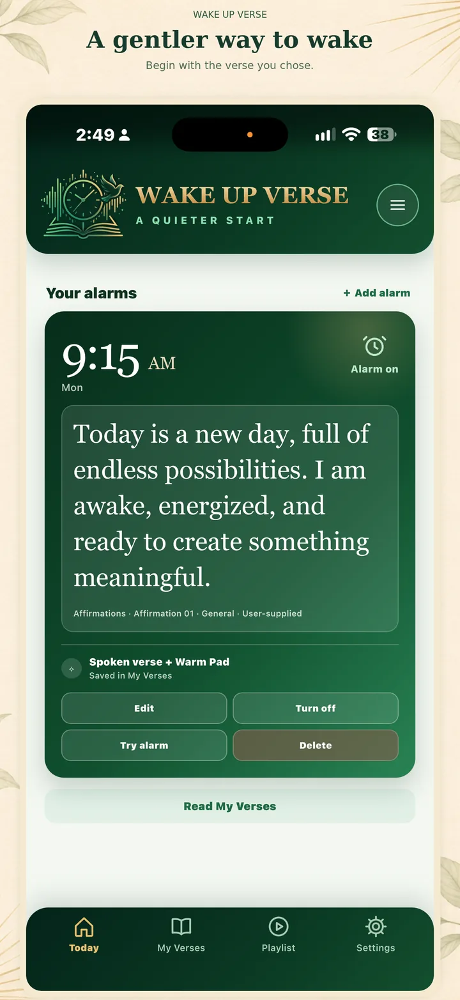

Choose a verse for each alarm
Set up multiple alarms and pick a saved verse for each one, or use Random Favorites to choose from your enabled categories.
A calmer start, in your own words
Choose a verse for each alarm, or let a favorite meet you in the morning. Wake Up Verse brings thoughtful words, spoken audio, and optional quiet ambience into one personal routine.
The App Store listing will be linked here after release.
Built around what you keep
Save what resonates in My Verses, then choose from your saved library when you create an alarm or a playlist.
Set up multiple alarms and pick a saved verse for each one, or use Random Favorites to choose from your enabled categories.
Browse and save Bible selections, affirmations, Stoic and Buddhist quotes, or add a Custom Verse of your own.
Hear spoken words with optional ambient music. My Verses also includes a playlist player with a loop option.
Adjust text size and choose the look that suits you, with Forest and Night Glow themes.
Use saved verses in the app and prepare audio ahead of listening where supported, so a network connection is not needed at wake time.
Enable the categories you want in Settings. Disabled categories stay out of your verse library and alarm choices.
A look inside
Explore the Forest and Night Glow screens, along with verse selection, playlists, and reading controls.
